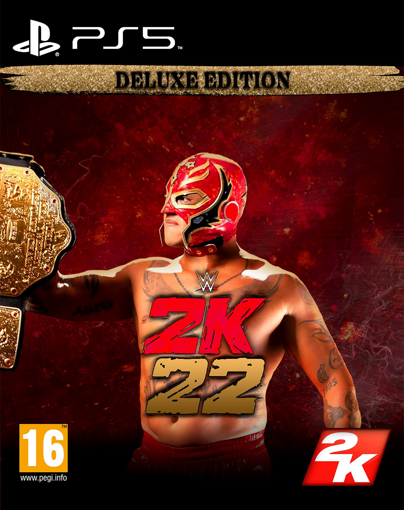

Portfolio

Mission Inspecteur Gadget
Reproduction fidèle du papier de mission de l'Inspecteur Gadget.

William, dans Stranger Things ?
Incorporation de mon visage sur une affiche de la saison 4 de Stranger Things.

Star Wars : Jedi Survivor
Pochette de jeu personnalisé du nouveau jeu Star Wars Jedi Survivor.

WWE 2K22 - Rey Mysterio
Création personnelle d'une cover de WWE 2K22 édition deluxe avec Rey Mysterio.

WWE 2K22 - Roman Reigns
Cover personnalisé de WWE 2K22 mais avec cette foic-ci Roman Reigns.